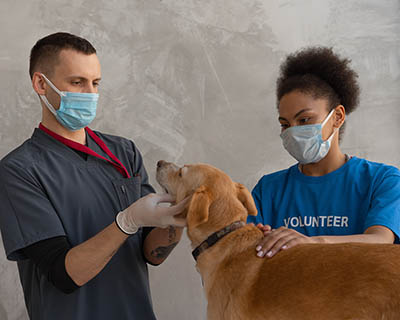

Incorporated in 2022, Lend a Helping paw Inc. is a non profit organization whose sole purpose is to find permanent and loving homes for neglected and abandoned dogs and cats who are in shelters and also to assist owners who must find new homes for their beloved pets. We are totally staffed by dedicated volunteers and all pets in our program are in foster homes where they can receive love, attention, and any medical assistance needed.
LAHP is one of several non profit pet rescue organizations in the State of Florida. Our coverage region is Central and Western Florida only. We kindly ask that if you do not live in this area, please contact one of the other Boxer rescues that service the area where you reside.